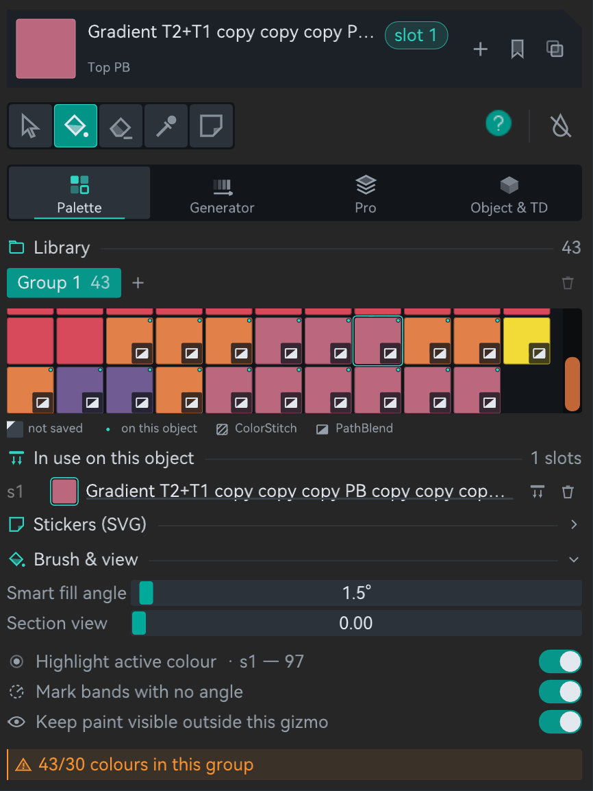
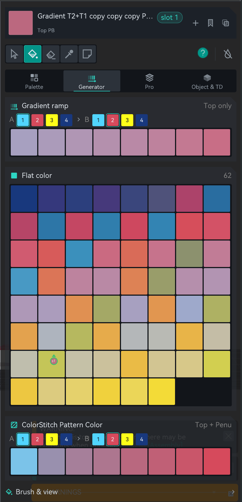
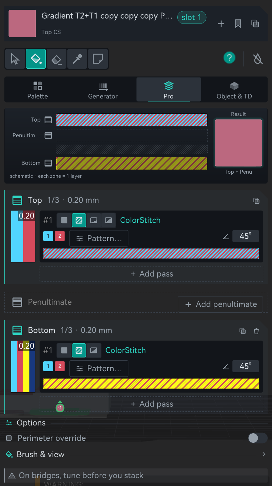
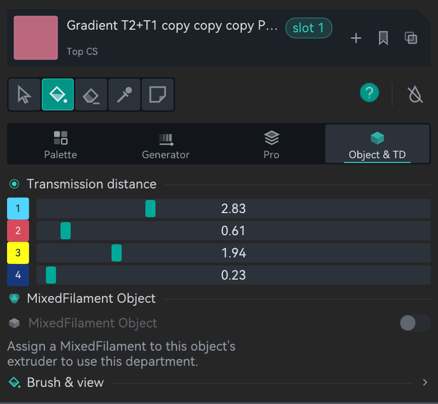

§6 — Colour
The ColorStitch Painter
A Sandwich in the settings applies to the whole object. The Painter breaks that apart: save recipes as profiles, then flood-fill them onto individual faces. Every step of a staircase can carry a different one, and the weave is drawn on the model while you work.
- no gate
- print-verified
- reworked in 2.4.0
Where Left-side gizmo toolbar›ColorStitch Painter
Orca has its own multi-material painter, the Color Painting gizmo, which assigns raw filaments to triangles. This is a different icon in the same toolbar, and it paints Sandwich recipes rather than filaments. Both can be used on the same object; Painter Pro Mode is the set of precision add-ons bolted onto the stock one.
What breaks without it
Put one recipe on a whole object and every surface gets it. Print a staircase and every tread gets the same treatment, which is fine until you want the top step gold and the rest of them to fade through a gradient. The only other way to do that is to cut the mesh into separate objects, which changes how everything slices and creates seams you did not ask for.
Without it
One recipe per object. Different effects means different objects, or a mesh split into parts that then have to be reassembled.
With the Painter
Click a face, it fills with the active recipe. One mesh, as many recipes as you have flat surfaces, all of it saved inside the 3MF.
The tools
| Tool | What it does |
|---|---|
| Select | Click objects in the scene to choose which ones you can paint. Shift click removes one. |
| Paint (smart fill) | Click a flat face and the coplanar region floods with the active profile. |
| Eraser | The same smart fill, removing paint under the cursor. |
| Pick (eyedropper) | Reads the recipe under the cursor and makes it the active colour. |
| Sticker | Places a loaded SVG on a flat top face. See the warning below. |
Left-click paints, erases or picks with whatever tool is active. Right-click is camera only, so you never lose work by orbiting. Shift + left-click is a one-shot erase whatever tool you are holding.
Painting several objects 2.4.0
Open the Painter with nothing selected and it starts in Select so you can click the objects you want. Open it with a selection and those are already picked. While painting, moving the cursor onto another chosen object switches to it, and clicking an object that is not in the set adds it. That first click adopts the object; the one after paints it.
The active colour tells you its state 2.4.0
| Badge | Meaning |
|---|---|
| slot N | The colour already owns a paint slot on this object. Painting applies it right away. |
| ready | A colour is chosen. It takes a slot the first time you actually paint with it. |
| no colour | Nothing is selected. Clicking the model will not paint, and will not erase either. |
This badge exists because of a long-standing trap: the swatch kept showing a colour that had quietly stopped being paintable after a slice or a tab change, so clicks did nothing until you re-picked it from the palette, with no way to tell why.
The four departments
Since 2.4.6 the panel reads top to bottom the same way in every department: a card for the active colour, the tools, four tabs, and under them the department you picked, with Brush & view and the warnings at the end. Point at anything in the map and the box beside it says what it is for.
GLGizmoColorStitchPainter.cpp) with its own icons (draw_glyph).
Two things in it are computed: the stripe bars come from the port of
SurfaceColorMix.cpp, and the Result, the active colour card and the swatches
from the port of ColorSci.cpp, so moving a TD slider really changes them. A
PathBlend pass is simplified to a cap that thickens from floor to ramp end over the other
filament. In Pro the pass buttons work; buttons that open dialogs in the app do nothing here.
The same four departments in the app, with a different recipe loaded:




Pass rows in Pro 2.4.6
Each zone is a card: its icon, the name, how many passes it has out of three, and how thick the zone is. The icon is a block with that zone's layer lit, because zones have no colour of their own any more. Amber is kept for warnings, so Bottom stopped being "the orange one".
- A pass reads in three lines. The first has its number and four icons for the type: Solid, ColorStitch, PB Half and PB Full. Bottom shows three, because PathBlend there is always Full, and a type that would break the zone's limits is dimmed. Move up, move down and remove close the line, in their own well.
- The second line has what the type needs: filament chips for Solid, the two real tool numbers and Pattern… for ColorStitch, ramp and cap for PathBlend. The fill angle sits at the right end for all three, and an angle left on auto reads auto in violet, the same violet as the outline in the 3D view.
- The third line is the stripe bar. It reads from right to left, like the 3D view and the slice, so in a gradient the start is on the right. Scroll the wheel over it to turn the angle, and right click it for Duplicate, Move up / down and Delete. The clone splits the original's thickness in half so nothing else in the stack moves.
- PathBlend adds a fourth line with floor and ramp end, the ramp mode, and Profile…, which carries a teal dot once the ramp has been shaped.
- The thickness bar on the left shows each pass with its millimetres. Drag the teal notch between two passes to move thickness from one to the other.
- Add pass is a dashed button at the end of the zone. It goes away once the zone has three passes, or when it holds a PathBlend.
- A
!CSor!PBbutton appears on a Solid pass still carrying a leftover ColorStitch or PathBlend payload from an older build. The engine slices it as Solid (the kind wins) but the recipe looks like an effect, so the preview came out flat. Click it to restore the pass. New ones cannot be created; switching a pass to Solid now clears its payload. - Copy sits in the zone's header and opens a small menu with the two other zones. The whole zone travels, ColorStitch pattern included, translated to the destination zone's keys, and a stack landing on Bottom is trimmed to the Bottom rules: max 2 Solid, max 1 ColorStitch, PathBlend forced to Full. Penultimate and Bottom also have a bin that empties them.
- Warnings no longer pop up between the controls. They all sit in a tray at the bottom of the panel, amber when something is wrong and grey when it is a tip.
Dragging a divider or a number in Pro used to schedule a slice again on every frame of the drag. The heavy work is now committed once, when you let go, the same rule the TD sliders already followed. The Result at the top of Pro still updates live while you drag.
Painting one, step by step
The panel in these shots is older than 2.4.0, so they still show the old Top Surface / Bottom Surface switch and the TD grid inside Pro. The workflow is the same; for the current layout see the map and the four department shots above.


Slots, and what an unpainted face gets
Painting spends slots. Each object has up to 254 of them (slot 0 is unpainted), and a slot holds the mapping from a painted region to a recipe. It is worth seeing what happens to the faces you leave alone, because that changed in 2.4.6.
| Situation | What applies |
|---|---|
| Object with zero painted facets | No effect. Up to 2.4.5 the Sandwich editor's recipe applied here; since 2.4.6 an old project moves it into the palette when it opens. |
| Painted area | The painted profile applies. |
| Unpainted area | No effect. |
Up to 2.4.5 that last row caught everybody once. An object could carry a recipe from the Sandwich editor in the print settings, and painting a single face switched it off on every other surface. Since 2.4.6 there is no recipe in the settings any more, so an unpainted face simply prints plain, and "paint the bit I care about and leave the rest" does exactly what it says.
Working colours and saved palettes
Colours you paint with are working colours: created on demand, deduplicated, and garbage collected when no face uses them any more. In the palette they carry a light notch in the corner until you save them. Just browsing palettes does not consume anything.
Saved palettes are deliberate and named, they travel in the 3MF, and they
are organised into up to 10 global groups. Save all promotes
every unsaved working colour into the active group at once, which is the thing to do before
an Erase all so nothing is left dangling. Painting and the slot-to-profile
mapping are both recorded for undo and redo within the session.
Two bugs worth knowing about because they explain odd twins in old projects. Save used to drop the Bottom zone: a recipe was carried as Top plus Penultimate, and Save built the saved palette from those two, silently losing a Bottom in the very gesture meant to preserve your work. Bottom now travels with the colour and counts when Save looks for an identical existing palette, because two recipes that match on top and differ underneath are different colours. And the list used to reshuffle under the cursor, because "is this colour occupying a slot" was checked against the active object, which changes on simple hover. It now counts every chosen object, so the grid stays put.
The weave, drawn on the model
Painted top surfaces show the actual ColorStitch weave on the mesh, not a flat swatch. The preview is built from the same per-line sequence the slicer produces, so the filament colours, the density and the pattern match the G-code. The same builder draws the stripe bar under each pass in Pro, so the bar and the 3D view cannot drift apart. One catch since 2.4.6: the slicer now places everything by position, and this preview has not caught up yet, so on a surface with holes, or with stripes in mm, a band can start in a slightly different place. Check the G-code in RealColor when it has to be exact.
- Scale is real. The stripe pitch comes from the resolved top line width, and the gradient is scaled to the painted region's own extent, computed per island. Each flat zone is detected as a connected component using edge adjacency, so zones that only touch at a corner stay separate and each gets its own ramp, exactly like the slice.
- Orientation matches for a fixed angle. Set the angle by scrolling the wheel over the pass preview bar and the bar, the model and the print all rotate together. On auto the slicer alternates every layer, so no static preview can match. The angle then reads auto in violet, and Mark bands with no angle outlines those bands on the model in the same violet.
- Bottom is previewed too (2.4.0). Upward-facing facets show the Top recipe, downward-facing ones show the Bottom, each with its own islands and scale. A Bottom made only of Solid passes has no weave to draw, so it gets its own composed colour instead of borrowing the Top's.
- Where you can paint follows the recipe. A recipe with Top or Penultimate content keeps upward-facing facets; one with Bottom content keeps downward-facing ones; one with both keeps both. Side walls are never painted, because the effect would not print there anyway.
Two limits in this version: the stripe scale uses the painted area's projected extent rather than the exact line count after perimeters and gap fill are subtracted, so it can be off by a line or two. And islands wider than about 64 lines coarsen in the preview, because the shader uses a 64-entry lookup. Gradients lose resolution; patterns still tile at real width.
Paint stays visible with the gizmo closed 2.4.0
Until 2.4.0 a painted Sandwich only existed while the Painter was open. Close it and the object went back to one flat colour, so nothing on the plate told you which parts were painted or with what. Plate thumbnails had the same blind spot.
Painted objects are now drawn painted in the normal 3D view, with the full weave, composed against the object's real base colour and TD. It is the same code doing the drawing in both places. Two differences worth knowing: the lighting is not the same (inside the gizmo it is the painter's own shader, outside it is the normal one or Libre Mode's realistic shading), and small leftover facets print flat here, taking the slot's composed colour rather than falling back to a whole-object weave. A switch in Brush & view, Keep paint visible outside this gizmo, turns it off; it is on by default and applies to the whole project.
The MMU painter draws your Sandwich painting too, with the full weave, so you can decide where MMU paint goes without working blind. Where the two meet, MMU is drawn on top, which is exactly what the slicer does: where you painted MMU, MMU rules, and that surface prints plain in its own filament with no Sandwich effect. Both painters tell you in amber how much of your paint is affected when it actually happens.
Known limitation: where a surface is split, by MMU paint or anything else, each piece restarts its gradient instead of continuing it. The line spacing stays continuous across the boundary; the colours restart.
Highlight active colour 2.4.0
The panel always knew which colour was active. The 3D view never said where that colour already is, and with two similar colours on one plate there was no answer to that beyond squinting. The Highlight active colour switch in Brush & view draws the outline of the painted region for one slot, boundary edges only so it frames the area without covering the weave, plus a faint box around each island and a badge carrying the slot number. The outline is drawn twice, solid on the surface and as a ghost through the object, so a zone facing away from you still shows without orbiting blind.
Each badge shows the slot number, a disc in the colour of the slot and a ring plus a
wedge in the zone colour: the wedge points up for a top island and down for a bottom
one, and bottom badges sit under their island. The counter next to the switch reads
sN — 137 or sN — not painted here, and that distinction matters,
because "the colour is active and I see nothing" has two very different causes.
By default it highlights the active colour. Hovering a swatch in the palette grid, or a row of In use on this object, highlights that one instead. On a multi-instance object only the first instance is highlighted, and a bottom outline can be hidden by the build plate, which is what the badge under the island is for.
MixedFilament Object mode beta
A MixedFilament can be assigned to a whole object as its extruder, the same way you would assign any normal filament. This mode is a single switch that makes that object's top surface, penultimate layer and bottom surface actually look like that MixedFilament's colour.
Turning it on auto-generates a small sandwich of up to three solid passes that approximates the MixedFilament's colour using your other loaded filaments and their TD values, with the same colour-matching maths the Studio uses. It also turns Perimeter override on, so the walls get reprinted to match.
And it locks out manual painting for that object. The palette, the zone editors and the Perimeter override switch grey out, and since 2.4.0 the lock covers the brush in the 3D view as well. Before that, the controls greyed out but clicking the model still painted: slots were spent and re-slices scheduled for paint the engine then ignored, which is work lost with no warning. Placing a sticker is blocked for the same reason. Select and the eyedropper keep working. Turning the mode off restores whatever was painted before.
If the object's extruder is not a MixedFilament the switch is greyed out, and the reason is written right under it. One known rough edge: the swatch shows the colour only, not a preview of the passes that will print.
Profiles and the 3MF
In the Painter, the icons on the active colour card do the work: Save puts the active recipe in the saved Profiles library, Duplicate makes an independent copy to edit, and right clicking a swatch gives you Duplicate, Save to palette and Delete. A project that used the old Sandwich editor opens with its recipe already saved, as From Sandwich editor. Deleting a profile that still has painted areas raises a non-critical slicing warning; the slice continues and those areas simply get no effect until you re-paint or re-create the profile.
Everything lives inside the 3MF: the profile library as project-level base64 JSON, the per-volume slot tables mapping slot to profile id, and the per-triangle paint, mirroring how MMU painting is stored. Opening a 3MF restores all three. There is no cross-project library, so the way to reuse a set of profiles is to keep a template 3MF and start from it.
The penultimate PathBlend has a gradient-direction bug on multi-stair objects, so the pass is restricted to the Top zone. The engine supports penu PathBlend; it comes back when the bug is fixed.
Assembled objects
On an object made of several parts, painting a colour that already had a slot used to record the facets but not the colour itself on the other parts. The part sliced correctly while the painter showed it grey, the eyedropper read no recipe there, and the highlight had nothing to light up. Paint slots are per part, and the profile is what identifies a colour across parts. That is now respected everywhere, and objects already in this state are repaired when the object is opened in the painter: orphan paint recovers its colour from the sibling part that still had it.
Stickers experimental
Load an SVG in the Palette tab and the Sticker tool places it on a flat top face. It is not geometry: the shape becomes a 2D mask carrying a Sandwich recipe, resolved at slice time. Stack several and the topmost wins where they overlap; it occludes rather than blends.
It works and it slices. It is also the least finished part of the painter, and you should know what you are getting:
- You cannot see a sticker anywhere. Not in the normal 3D view, not inside the MMU painter, and not even inside the Sandwich painter unless you are actively editing that sticker. You place it, it disappears, and you find out what it did in the preview or the G-code.
- A sticker overrides everything under it, silently. Hand-painted zones and MMU paint both. It is applied last, over whatever survived. Nothing warns you.
- Top surfaces only. Bottom stickers were never implemented.
- The wipe tower does not currently switch between a painted tower and a sticker one.
All of this is being handled together in a planned Mask-Painting section, where stickers and a drawing tool become one thing. Until then, treat them as a curiosity.
The catch
- Editing in Pro rewrites the profile in place, everywhere it is already painted. That is usually what you want. When it is not, use Duplicate to get an independent copy first.
- Profiles do not leave the project. No global library. Keep a template 3MF.
- Deleting a profile leaves painted areas orphaned. The slice warns and carries on with no effect in those areas.
- Stickers are invisible until they print. See above.